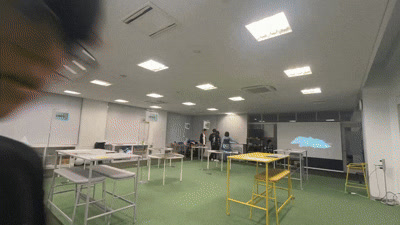
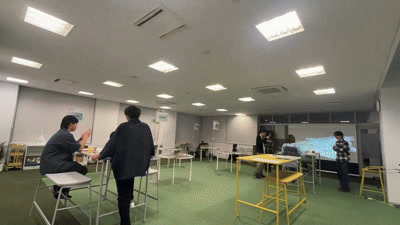
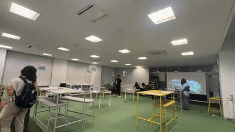

自主企画ゼミが始動
Home Coming Dayへの参加と、その後も続けられる思い出マップの企画を話し始めた。
麗澤大学 2026年度春 / 自主企画ゼミ活動報告
SUPERVISOR Yoh Kawano
Fuga Nakamura / Keitaro Takahashi / Hikaru Kobayashi / Soichiro Kanbe
Moriumi Maeda / Shion Oba / Aoi Omori / Yurino Nakamura / Kenta Nakatani
昨年度、滋賀県高島市で集めた「場所と思い出」をきっかけに、学生が自分たちで次の展示を企画した。舞台は麗澤大学のHome Coming Day。年代の異なるキャンパス地図を並べ、卒業生が在学当時の出来事を付箋へ記録できる場をつくった。
第2期となる今回は、紙の地図だけでなく、付箋の撮影、手書きOCR、人による確認、データベースへの保存、3D空間への表示までを一つの流れとして開発した。本ページでは、4月の企画開始から6月20日の本番、8月2日のオープンキャンパスまで、学生が何を決め、作り、直したかを記録する。






2026年春、麗澤大学の自主企画ゼミとして集まった学生が、卒業生と在校生の記憶を同じ地図の上へ集める展示を企画し、4月の構想から8月の再実践まで、決めたこと、作ったもの、直したところを時系列で記録する。
アナログ班は年代の異なるキャンパス地図を印刷してラミネート加工し、六つのカテゴリに色を割り当てた付箋と紐で、思い出とその場所を紙の上に結ぶ。技術班はスマートフォンでの付箋撮影、手書きOCR、人の目による確認、データベースへの保存、Unityでのリアルタイム表示までを一本の経路としてつなぐ。
細部の完成度より先に端から端まで通す判断を置く。本番三日前には投稿地点と3D上の表示位置がずれ、原因がUnityの単位設定にあると突き止めて座標を補正し、6月20日のHome Coming Dayで紙と3Dが同じ会場で動く展示を成立させる。
振り返りでは、当日の分担とシステムの本番稼働を成果として残す一方、参加方法の説明、進捗の共有、古地図の背景知識を次に直す点として記録。その課題を抱えたまま対象と会場を変え、8月2日のオープンキャンパスで再び実践へ。来場者数や投稿数といった定量的な成果は、確認でき次第この記録へ追記する。
01 / ACTIVITY CALENDAR
日付を選ぶか、そのまま下へスクロールして活動を追えます。
Home Coming Dayへの参加と、その後も続けられる思い出マップの企画を話し始めた。
アルバム、フィルム、日記、カレンダーなど、思い出を扱うUIの参考を集めた。
年代別地図の展示と、投稿を3D空間へ表示する仕組みを並行して進めることにした。
3D空間にキャンパスを置き、投稿を表示するための最初の試作を行った。
見る場所、付箋を書く場所、デジタル表示を見る場所の関係を検討した。
あなたの青春が同じ地図上で出会う。離れていても思い出はキャンパスに。
必要な素材や判断が揃わず、担当者がいても制作を進めにくい時間があった。
誰が何をいつまでに行うかを一覧にし、班を越えて作業できるようにした。
天候や施設利用に合わせ、先に進められる古地図の印刷・加工へ切り替えた。
複数年代の地図を印刷し、来場者が在学時代を選んで書ける展示を制作した。
手書き認識だけに任せず、公開前に人が内容と位置を確認する工程を組み込んだ。
年代ごとに範囲の違う画像を同じ3D空間へ置くため、画像の端と緯度経度の対応を調べた。
細部の見た目より先に、WebからSupabase、Unityまでの経路を成立させることを優先した。
投稿地点と3D上の表示位置が合わなかった。
地理座標とUnity単位の対応設定にずれがあった。
座標を補正し、Supabaseの新規投稿を即時表示できた。
年代別地図、歴史写真、付箋、撮影用Webアプリ、Unity表示を組み合わせて公開した。
分担とシステム稼働を評価する一方、参加方法、進捗共有、古地図の説明を改善点として整理した。
本番で使った画面と処理を公開リポジトリへまとめた。
Three.jsでキャンパス、周辺地図、思い出の位置を表示し、スマートフォンでも確認できる試作を行った。
議事録、Slack、画面、写真を照合し、公開できる活動記録へ編集し始めた。
HCDの振り返りを踏まえ、iArenaでの机、モニター、説明物、参加者の動きを組み直した。
ポスター、説明紙、OCRサーバー、レビュー画面の準備を進めた。
オープンキャンパスでデモを実施した。来場者数や投稿数などの定量評価は、確認後に追記する。
02 / OUTPUTS
同じ大きさの成果一覧ではなく、来場者の一枚が3D空間へ届く順に紹介します。
EXPERIENCE / ANALOG
卒業生が在学した年代を選べるよう、複数年代のキャンパス地図を制作した。付箋のカテゴリと場所を対応させ、紙そのものを思い出の収集装置として設計した。
NEXT.JS / YOMITOKU
Next.jsで撮影用Webアプリを制作し、付箋画像、カテゴリ、地図上の位置をSupabaseへ送信した。ローカルのOCR処理はCloudflare Tunnel経由で会場のスマートフォンへ配信した。
SUPABASE / DATABASE
思い出の本文、カテゴリ、緯度経度、画像の参照先をSupabaseで管理した。新しい投稿を再読み込みなしでUnityへ届けるリアルタイム通信にも利用した。
UNITY / BLENDER
Unityで投稿をリアルタイムに描画し、Shader Graphで思い出が浮かび上がる表現を作った。Blenderではキャンパスモデル、ワイヤーフレーム地図、開く本や紙のアニメーションを制作した。
THREE.JS / WEB VIEWER
Unityで検証した位置や構成を参照し、Three.jsでブラウザ版を試作した。PCとスマートフォンから地図と投稿位置を確認できる。
03 / TECHNICAL MATERIALS
Supabase、Next.js・OCR、Unity、Blenderの構成と工夫を、A3縦の全7ページにまとめた資料です。
公開版は、担当表記、技術名称、未完成ページを校正してから配置します。
PDF / PPTX
原本はプロジェクト外で管理中
04 / PUBLIC PRACTICE
2026.06.20
卒業生と在校生が交流する場で、年代別地図と3D表示を組み合わせた。紙へ書く体験と、投稿が表示される仕組みを初めて本番運用した。
2026.08.02
対象と会場を変え、iArenaでデモを行った。HCDで見つかった導線と説明の課題を踏まえ、机、モニター、説明物、運用を組み直した。
05 / REFLECTION
＋
→
06 / CREDITS & SOURCES
Yoh Kawano
Fuga Nakamura
Keitaro Takahashi
Hikaru Kobayashi
Soichiro Kanbe
Moriumi Maeda
Shion Oba
Aoi Omori
Yurino Nakamura
Kenta Nakatani
OCR Web application ↗
Unity mapping ↗
Three.js Web viewer ↗
kiseki-lab ↗
本ページは議事録、Slack上の活動記録、制作物を照合し、公開可能な内容へ要約しています。写真、実名、投稿内容は公開許諾を確認しながら更新します。一次資料そのものは公開リポジトリへ収録しません。